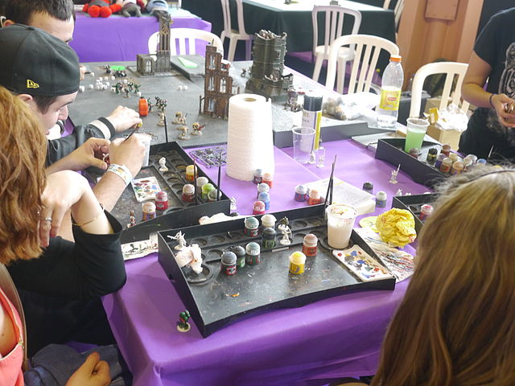
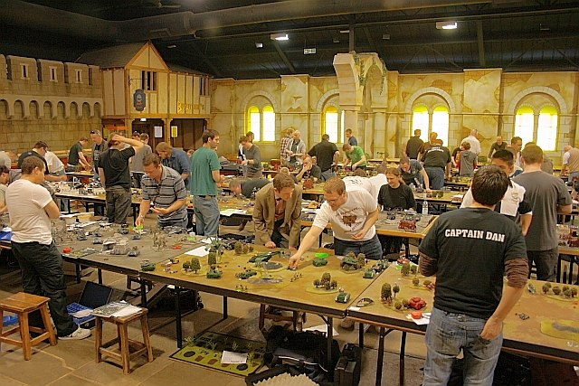

Bienvenue sur le site de la Cave
Notre association, la Cave à figs, vous ouvre ses portes du lundi au samedi de 9h30 à 19h.
La Cave vous accueille pour peindre vos figurines quelque soit l'univers de provenance ou pour faire des parties avec vos amis et autres membres.
Nouveau dans le milieu du hobby ? Pas d'inquiétude nos différents membres encadrants sont partenaires avec un des plus grands fabricants du domaine.
Ils sauront vous aider à démarrer dans cet univers vaste et parfois impressionnant.
Vétéran dans le milieu du wargames et la peinture n'a plus de secret pour vous ?
Rejoignez nous pour participer aux différents concours de peinture et tournois de jeu de l'asssociation.
Pour plus de renseignements ou pour réserver un créneau de peinture ou de jeu, penser à nous contacter par mail.
Le coin peinture

La peinture et le montage des figurines représente la moitié du travail pour une collection.
Notre association vous propose un espace de peinture d'une cinquantaine de m² avec plusieurs tables
pour passer un bon moment en peignant vos armées ou décors.
Le matériel de peinture et de montage vous est propre
cependant mais nous vous fournissons les pots à eau, palettes à peintures et essuie-tout pour nettoyer les trop pleins de peinture.
Vous aimeriez testez afin d'être sûr que cela vous plaise ? Une initiation peinture par nos membres est possible sur réservation.
Vétéran des pots de peintures et maître du pinceau ? Présentez vos créations lors des différents concours de peinture de l'association.
Le champ de batailles

Une fois vos figurines peintes, il est temps de les faire s'affronter sur des champs de batailles.
La Cave vous propose plusieurs tables de jeu avec décors, offrant ainsi des champs de batailles variés, adaptées pour tout types de parties.
Vous n'avez jamais fait de batailles mais aimerez tester ? Pas de problèmes, des initiations peuvent être programmées pour vous faire découvrir le jeu
par nos encadrants.
En plus de pouvoir faire des batailles entre amis, l'association vous propose différents tournois de jeu tout au long de l'année.
Pour plus d'informations, rendez-vous sur la page Evenements, vous y retrouverez la programmation de nos différents tournois et autres futures init